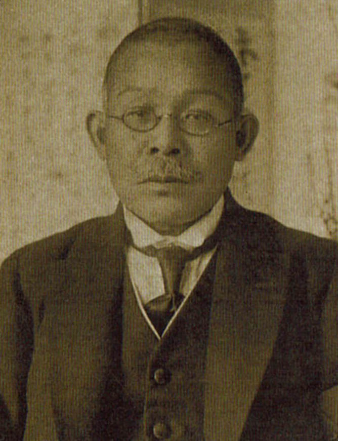

News
新着情報
2021/06/01
桜花学園120周年記念特設ホームページを公開しました
2021/07/01
皆さまの「学園に関する思い出」を募集します
2021/00/00
新着情報の見出しが入ります新着情報の見出しが入ります
Since 1903
桜花学園の原点
桜花学園のはじまりは、明治36年（1903年）のこと。
創立者、大渓専（おおたに もはら）の「女性たちにすぐれた教育を」という理念を元に、
愛知県内最初の私立看護婦学校として誕生、看護婦養成に努めました。
創立者
大渓 専
江戸の時代が終わり、年号が明治に改元されて間もなく、明治5年1月10日に桜花学園の創始者・大渓専は誕生しました。生家は江戸時代末期から代々続く、真宗大谷派光明山願専寺。しかし、専の祖父湛念は社会事業に没頭し私財を使い果たし、歴史ある寺の床は落ち、天井からはヘビが顔を出す荒れ寺に変わり果てていました。
専の祖父湛念は無私無欲の人でした。施して求めず。そのため、貧しい寺は荒廃をきわめていました。そして、専もまた祖父の血をそっくり受け継いでいました。専は15歳になった明治20年、岡崎にあった真宗大谷派立中学校、三河教校に入学しました。
専には11人の弟妹がおり、専の進学はただでさえ苦しい願専寺の家計を直撃しました。苦しい家計の中、両親が専を進学させたのは、両親の教育への深い理解と、専の資質を見抜いてのことでした。専は両親の期待をひしひしと感じながら、岡崎の学校までの往復40キロを毎日歩いて通いました。
明治24年秋、専は真宗大学に入学。相変わらず困窮をきわめる家計をやりくりしての進学でした。苦学して真宗大学を卒業した専は、京華看護学校の雑務を手伝っている中、この看護学校の生徒原こうと親しくなりました。こうは専より4つ下。医者を目指していましたが、経済的な理由から断念。医者になる夢をあきらめるも、なおも志を高く看護婦への道を歩む彼女に惹かれ、明治33年に結婚。
父亡き後の願専寺を継ぎ、住職となった専、当時全国的に不況の嵐が吹き荒れていることに心を痛めていました。ただ、南無阿弥陀仏を唱えているだけでは民衆の窮状を救うことはできない。村のために何かしなければならない。専は立ち上がり社会奉仕団体を設立。唯一の楽しみだった酒と煙草をやめたのもこの頃だそうです。
Birth of OHKA
桜花学園の誕生
わずか生徒2名で開校
願専寺の住職として勤めに励むかたわら、専は看護婦学校の設立を志します。健康保険制度などない時代、病気になっても貧しい人々は医者にかかることもできず、ただただ神仏に祈るばかり。しかし、いくら神仏に祈っても病気や怪我が治るわけではありません。しかし、病人や怪我人の介護は、仏に仕える僧侶の勤めであるはずというのが専の持論でした。
死者への往生は弥陀の慈悲にお任せして、生けるものへの功徳は僧侶の任務である。専の精神はそこにありました。幸い妻のこうは看護学校で学んだ当時としては数少ない有資格者でした。医療の介護はこうが、心の介護は専が担当。専は、夫婦に与えられた使命だと確信しました。
父から受け継いだ願専寺の運営は母と兄弟たちに任せ、専とこうは明治36年、桜花義会看病婦学校を開校しました。専、31歳春のことでした。しかし、その年に入学した生徒はわずか2名。当時、女性は家庭にあって良妻賢母でいるのが美徳とされ、女性が高等教育を受けたり職業を持つことなど許されなかった時代。生徒は思うように集まらず、専とこうは大変な苦労を背追い込みました。
History
桜花学園の歩み
120年のすべてをお伝えすることは困難ですが、
ここでは、この節目の時期にぜひ知っていただきたい、
桜花学園の歴史を、ダイジェストで紹介します。
桜花高等女学校を設立
桜花義会看病婦学校を開校しておよそ20年後、専は我が国における女子教育の現状に憂慮していました。当時、先駆けて活躍していた女性たちに心動かされ、「どうしても信念のある人物をつくり出さねばならぬ。それには男子よりも家庭教育を司る女性の宗教教育が必要である」との想いを持ちます。専のいう宗教教育とは「知識の習得と並行して心の教育をする」ということであり、それが専の教育の理想でした。
専は大正12年1月25日、桜花高等女学校設立を文部省に申請、翌2月19日、文部大臣から正式に認可され直ちに着工されました。学校の所在地は、中区御器所町（現・昭和区緑町）。現在、桜花学園高等学校の建つ地でした。
大正14年桜花高等女学校の校舎
名古屋短期大学保育科を設置
時は流れ、いよいよ本学園は、念願の大学を創立することになりました。昭和29年6月15日の理事会、評議会で決議され翌30年2月1日に名古屋短期大学が設置されました。
豊田短期大学の開学と
桜花学園大学の設立
昭和61年9月、大谷和雄が理事長に就任して2年後に、豊田市から女子短期大学設置の要望が届きました。さっそく教育環境に最適な土地の取得につとめました。愛知環状鉄道近くの土地、京町の住宅団地が候補に上がるも売買に至らず、豊田市の好意により西武丘陵地帯にある豊田市開発公社の土地を確保。直ちに文部省に対して短大設置に関する書類を提出しました。大谷理事長は何度も上京し、文部省との折衝を重ねた結果、設置が許可され、施設を建設、平成10年豊田短期大学の改組転換により桜花学園大学が設立されました。
開学披露式典
沿革
| 明治36年 | 名古屋市中区に桜花義会看病婦学校を創立（創立者：大渓専） |
| 大正12年 | 名古屋市昭和区に桜花高等女学校を創立（創立者：大渓専） |
| 昭和14年 | 名古屋商業実践女学校を創立 |
| 昭和18年 | 名古屋商業実践女学校を桜花女子商業学校に昇格、昭和20年廃止 |
| 昭和23年 | 桜花女子学園中学校と桜花女子学園高等学校を設置、中学校は昭和30年に廃止 |
| 昭和30年 | 名古屋短期大学（保育科）を名古屋市昭和区に設置 |
| 昭和42年 | 昭和42年に愛知県豊明市栄町に移転 桜花女子学園高等学校を名古屋短期大学付属高等学校に校名変更 名古屋短期大学付属幼稚園を名古屋短期大学と同地に設置 |
| 昭和51年 | 名古屋短期大学に英語科を設置、平成10年に英語コミュニケーション学科に名称変更 |
| 昭和57年 | 名古屋短期大学に教養科を設置、平成10年に現代教養学科に名称変更 |
| 平成２年 | 豊田市に豊田短期大学を設置 |
| 平成３年 | 名古屋短期大学に専攻科（保育専攻１年課程）を設置、平成８年に保育専攻２年課程に改編 |
| 平成６年 | 名古屋短期大学専攻科（保育専攻）は、学位授与機構に認定 |
| 平成10年 | 豊田短期大学を桜花学園大学に改組 人文学部（豊田市）を設置 英語科を英語コミュニケーション学科に、教養科を現代教養学科に名称変更 |
| 平成11年 | 名古屋短期大学付属高等学校を桜花学園高等学校に校名変更 |
| 平成14年 | 桜花学園大学保育学部保育学科設置、桜花学園大学大学院修士課程人間文化研究科設置 |
| 平成15年 | 保育子育て研究所を設置 |
| 平成19年 | 名古屋短期大学専攻科（英語専攻）２年課程設置 |
| 平成20年 | 名古屋短期大学専攻科（英語専攻）は、学位授与機構に認定 |
| 平成20年 | 桜花学園大学人文学部を改組 学芸学部英語学科（豊明市）を設置 |
| 平成30年 | 桜花学園大学保育学部に国際教養こども学科を設置 保育子育て研究所をチャイルドエデュケア研究所に改編 |
Philosophy
建学の精神
ここで今一度、桜花学園が一番大切にしている、
建学の精神をおさらいしておきましょう。
この理念を元に、今までがあり、これからの未来があります。
「心豊かで、気品に富み、
洗練された近代女性の育成」
桜花学園の建学の精神は上記の通りです。また、「学校法人桜花学園寄附行為」の第3条目的には、次のように規定されています。「この法人は、教育基本法及び学校教育法並びに私立学校法に従い、宗教精神によって学校教育を行い、信念である女性を育成することを目的とする。」
入学式や学位記授与式では、学長「告辞」や理事長「祝辞」において、学園創立者、大渓専の「建学の精神」及び「宗教精神」が述べられ、今日まで継承されています。
At present
桜花学園の今
ひとりの創業者の想いからはじまった桜花学園、
120年経った今、どのように形作られているのでしょうか。
今の桜花学園を見てみましょう。

桜花学園大学
社会に、世界に、
期待される女性をめざして。
〒470-1193 愛知県豊明市栄町武侍48
TEL 0562-97-5503
FAX 0562-98-1162
［入試広報専用ダイヤル
TEL.0562-97-6311］


名古屋短期大学
あなたの「なりたい！」を叶える
”恋する大学”
〒470-1193 愛知県豊明市栄町武侍48
TEL 0562-97-1306
FAX 0562-98-1162
［入試広報専用ダイヤル
TEL.0562-97-6311］


Donation
桜花学園120周年
記念寄付金
桜花学園創立120周年を迎えるにあたり、皆様からの寄付金の募集をお願いしたいと考えております。
学園の更なる発展のため、ご協力いただけましたら幸いです。
※寄付金募集サイトは
ただいま準備中です。